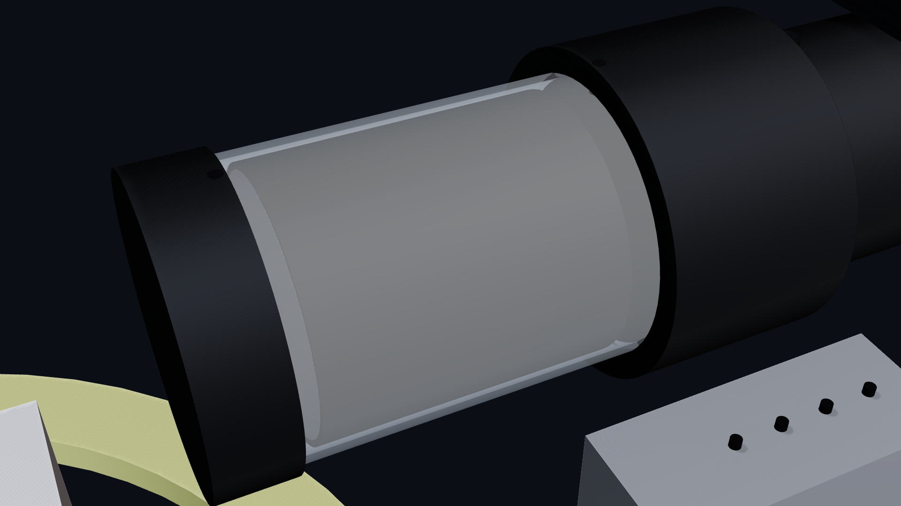
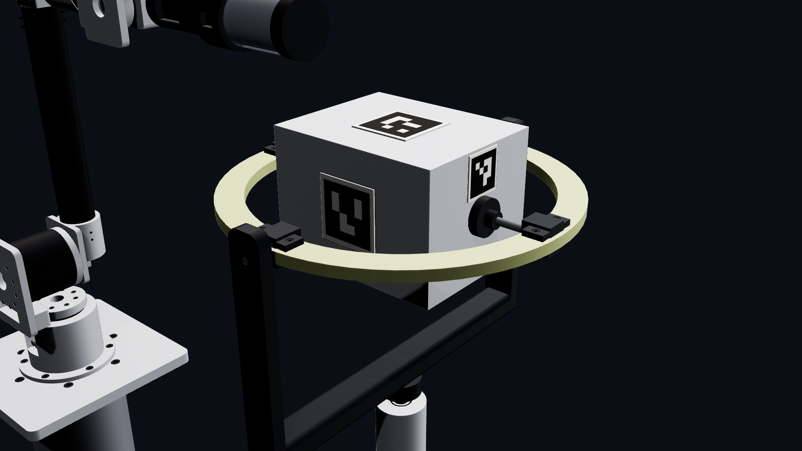

PROTOTYPE / ARM V2
Built in CAD.
Open to Review.
A five-axis arm, a motor-driven permanent magnet, and a free-gimbal target. A proposed ground-test rig for exploring contactless spin control.
Design and simulation only. No hardware built.
The supplied animation shows a modeled ground-test sequence. Its stopping behavior includes modeled bearing friction; it does not establish contactless braking performance.
01 / INSPECT THE DESIGN
Every Angle.
One Assembly.
Orbit the supplied CAD, then play or scrub its recorded trajectory. This is a replay of the supplied MuJoCo run, with no live physics solving in the viewer.
Supplied MuJoCo simulation replay · proposed ground-test assembly
Recorded overlap samples include the gimbal and, in one run, arm links against the hull. Target hull, ring and yoke collision response was disabled. These are geometric checks, not validated contact-force events.
Read the engineering interpretation02 / THE PROPOSED HARDWARE
Position.
Rotate. Observe.
Five arm joints place the source beside a marked aluminum target. The spindle turns the magnet about a transverse axis; two cameras are proposed for observation.

A rotating field source.
A proposed maxon spindle, coupling, titanium shafts, ceramic bearings and guarded N52 block magnet. Materials aim to reduce parasitic magnetic interaction; that still requires measurement.

A controlled place to learn.
The box target sits in a ring-and-yoke gimbal. Balance, free-decay measurements and moving-ring clearance must be established before interpreting a braking test.
Original renders from the supplied Arm v2 package. Proposed prototype geometry; vendor interfaces and mass properties remain under review.
03 / CANDIDATE PARTS
The Build,
Line by Line.
All 41 purchased line items from the supplied bill of materials. Open a group to inspect quantities and source estimates; the original workbook also includes fabrication schedules.
Estimates from the supplied report and parts list, not verified vendor prices or a purchase quote. Availability, interfaces, fabrication scope and final quantities need confirmation. Taxes, shipping and full validation costs are not established.
01Actuators
| Proposed item | Qty | Source estimate (USD) |
|---|---|---|
| J1 actuator Leadshine HJ290NKF101D24-NK-EC | 1 | $799.00Source: listed |
| J2 actuator Leadshine HJ2110BKF101D24-BK-EC | 1 | $929.00Source: listed |
| J3 actuator Leadshine HJ290BKF101D24-BK-EC | 1 | $859.00Source: listed |
| J4 actuator Leadshine HJ270NKF101D24-NK-EC | 1 | $659.00Source: listed |
| J5 actuator Leadshine HJ270BKF101D24-BK-EC | 1 | $729.00Source: listed |
02Spindle
| Proposed item | Qty | Source estimate (USD) |
|---|---|---|
| maxon EC-i 40 brushless motor, 70 W, 36 V, hall sensors (449470) | 1 | $290.00Source: listed |
| ODrive S1 motor controller | 1 | $149.00Source: listed |
| Bellows coupling 6 x 10 mm, zero backlash | 1 | $45.00Source: estimate |
| Titanium grade 5 rod Ø10 x 150 mm and Ø8 x 60 mm | 1 | $38.00Source: estimate |
| Full-ceramic bearing 6000 ZrO2 (10 x 26 x 8) | 2 | $48.00Source: estimate |
| Full-ceramic bearing 608 ZrO2 (8 x 22 x 7) | 1 | $16.00Source: estimate |
| Carbon tube 61 x 58 x 100 mm (rotor), cut to 68 | 1 | $22.00Source: estimate |
| Polycarbonate tube 66 x 63 x 300 mm (guard), cut to length | 1 | $18.00Source: estimate |
03Magnet
| Proposed item | Qty | Source estimate (USD) |
|---|---|---|
| K&J BY0Y0X0-N52 block 2 x 2 x 1 in | 1 | $159.54Source: listed |
| Epoxy potting (3M DP420 or West System), 200 g | 1 | $35.00Source: estimate |
04Arm structure
| Proposed item | Qty | Source estimate (USD) |
|---|---|---|
| Carbon tube 60 x 56 x 1000 mm (upper arm), cut to 445 | 1 | $95.00Source: estimate |
| Carbon tube 50 x 46 x 500 mm (forearm), cut to 227 | 1 | $55.00Source: estimate |
| Ceramic-hybrid bearing 6204 (20 x 47 x 14), wrist idler | 1 | $42.00Source: estimate |
| 6061-T6 aluminum stock for machined parts | 1 | $420.00Source: estimate |
| CNC machining of the aluminum parts (11 parts) | 1 | $2,600.00Source: quote |
| Base pedestal: steel tube 180 x 5 x 700 mm, 600 x 600 x 15 mm foot plate, top ring, 4 leveling feet | 1 | $480.00Source: estimate |
05Target + gimbal
| Proposed item | Qty | Source estimate (USD) |
|---|---|---|
| 1100-H14 aluminum sheet 1.5 mm, 500 x 1000 mm | 1 | $60.00Source: estimate |
| G10/FR4 sheet 12 mm, 400 x 400 mm (pitch ring, waterjet) | 1 | $140.00Source: quote |
| Full-ceramic bearing 608 ZrO2 (8 x 22 x 7), gimbal | 4 | $64.00Source: estimate |
| Full-ceramic bearing 6903 ZrO2 (17 x 30 x 7), yaw | 2 | $64.00Source: estimate |
| 316 stainless rod Ø8 x 300 mm and Ø17 x 200 mm | 1 | $30.00Source: estimate |
| Brass plate 4 mm, 120 x 80 mm (ballast), + trim weights | 2 | $36.00Source: estimate |
| Stand: 6061 tube 60 x 3 x 1000 mm, 500 x 500 x 15 mm base, bearing housing stock | 1 | $190.00Source: estimate |
06Vision
| Proposed item | Qty | Source estimate (USD) |
|---|---|---|
| Arducam OV9281 1 MP global-shutter USB camera + 6 mm M12 lens | 2 | $138.00Source: listed |
| LED panel light 60 x 40 mm, 5600 K, dimmable | 2 | $90.00Source: estimate |
| 4040 aluminum extrusion 1.5 m + 0.8 m, brackets, base plate | 1 | $110.00Source: estimate |
| ChArUco calibration board (printed on 3 mm dibond), ArUco marker prints | 1 | $40.00Source: estimate |
07Controller
| Proposed item | Qty | Source estimate (USD) |
|---|---|---|
| Fanless industrial PC (Intel N100 class) with Linux + EtherCAT master (IgH/SOEM) | 1 | $420.00Source: estimate |
| Mean Well RSP-1500-48 (48 V, 1500 W) | 1 | $370.00Source: listed |
| Pilz PNOZ s3 safety relay + 48 V DC contactor + 2 E-stop buttons | 1 | $260.00Source: estimate |
| Steel enclosure 500 x 400 x 210 mm, DIN rails, breaker, terminals, glands | 1 | $260.00Source: estimate |
| Cabling: EtherCAT M8 cables (6), power cables, through-bore harness, drag chain | 1 | $240.00Source: estimate |
08Printed parts
| Proposed item | Qty | Source estimate (USD) |
|---|---|---|
| PA12-CF filament / SLS print service for the printed parts | 1 | $320.00Source: quote |
09Fasteners
| Proposed item | Qty | Source estimate (USD) |
|---|---|---|
| ISO 4762 socket head cap screws, set screws, nyloc nuts, heat-set inserts (A2 stainless) | 1 | $90.00Source: estimate |
10Tools / test
| Proposed item | Qty | Source estimate (USD) |
|---|---|---|
| Rotor balancing service (ISO G2.5 at 3000 rpm) | 1 | $150.00Source: estimate |
| Hall-effect gaussmeter (for field verification) | 1 | $180.00Source: estimate |
Fabrication schedules
The workbook lists 17 machined parts, 12 printed parts and 166 fasteners. The STL bundle contains 31 exports, including marker plates and ink geometry. These counts describe the supplied design, not a released manufacturing package.
The machining purchase line mentions 11 parts while the schedule lists 17; reconcile the scope before requesting quotes.
17 machined parts
- base plateARM BASE
- J1 housing cupARM BASE
- turret bracketARM L1 TURRET
- upper hub discARM L2 UPPER
- upper hub blockARM L2 UPPER
- elbow housingARM L2 UPPER
- forearm hub discARM L3 FOREARM
- forearm bossARM L3 FOREARM
- J4 cradleARM L3 FOREARM
- fork hub discARM L4 FORK
- wrist forkARM L4 FORK
- head hub shaftARM L5 HEAD
- head clamp blockARM L5 HEAD
- stand post 6061TARGET STAND
- stand base plateTARGET STAND
- stand post flangeTARGET STAND
- mast base plateCAMERA MAST
12 printed parts
- boom shell printedARM L5 HEAD
- rear bearing block printedARM L5 HEAD
- nose block printedARM L5 HEAD
- yaw yoke printedTARGET YOKE
- bearing block xn printedTARGET RING
- bearing block xp printedTARGET RING
- bearing block yn printedTARGET RING
- bearing block yp printedTARGET RING
- roll hub px printedTARGET BOX
- roll hub nx printedTARGET BOX
- cam A camera housingCAMERA MAST
- cam B camera housingCAMERA MAST
166 fasteners in CAD
| Type | Count |
|---|---|
| M10 cap screw | 6 |
| M3 cap screw | 4 |
| M3 set screw | 6 |
| M4 cap screw | 51 |
| M4 cross pin | 8 |
| M4 nut | 8 |
| M5 cap screw | 66 |
| M6 cap screw | 7 |
| M8 cap screw | 10 |
04 / DEVELOPMENT SEQUENCE
From Drawings
to Evidence.
A staged path for reviewing and testing the prototype. Each step resolves a question before the next layer of complexity is added.
- 01
Verify the design.
Check vendor drawings, actuator bolt patterns, connector clearances and delivered dimensions. Reconcile the magnet mass and CAD mass model, repeat load checks, and review interference-check exclusions before machining.
- 02
Establish the baseline.
Build and balance the target stand first. Measure free decay, bearing friction and repeatability with the magnet inactive. Use those measurements to separate stand losses from magnetic effects.
- 03
Assemble and qualify the arm.
Review hubs, tube bonds, cable routing, guard and rotor containment before controlled commissioning. Validate the stop chain, joint limits, rotor retention, spindle balance and magnetic response of nearby materials. The proposed EtherCAT hardware adapter still needs implementation.
- 04
Calibrate observation.
Calibrate camera-to-arm geometry and verify pose estimates against measured references. Complete two-camera fusion and test marker loss and gimbal occlusion before closed-loop operation.
- 05
Run controlled comparisons.
Compare repeatable magnet-inactive, static-magnet and rotating-magnet trials with measured clearance, spin and temperature. Resolve moving-ring avoidance and determine the usable tumble envelope.
Design under review. Assumed bolt patterns, unresolved mass differences and preliminary clearance checks mean the CAD is not ready for manufacture. A successful ground test would still not establish flight capability.
Open questions & validation05 / SOURCE FILES
Inspect the
Underlying Design.
Original supplied geometry and parts files, preserved for review. Read the engineering corrections alongside the source’s design claims.
The complete package includes CAD sources, configurations, MuJoCo models and results, the Fusion script and the original report. That report contains uncorrected statements.
Read the corrections before using the packageThe source files retain their original Arm v2 names. Source price classifications and material claims have not been independently validated. See the report review.